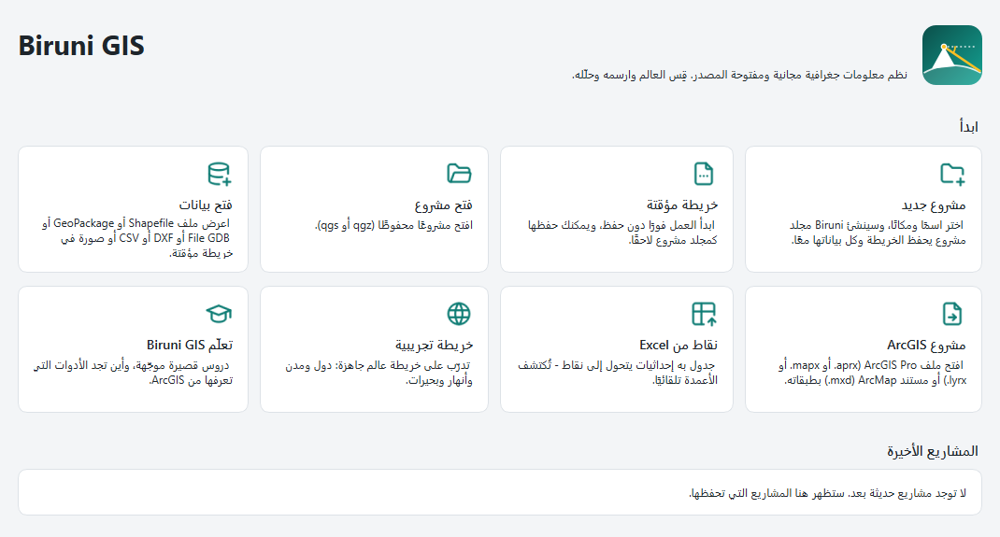
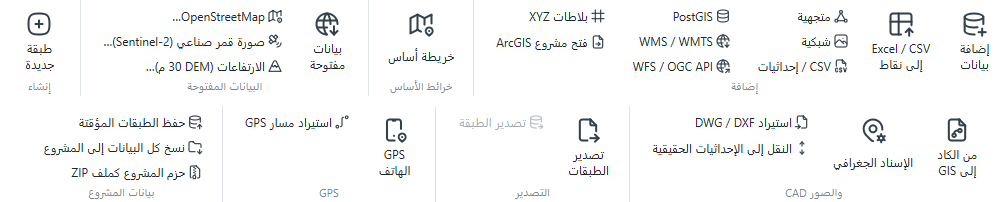
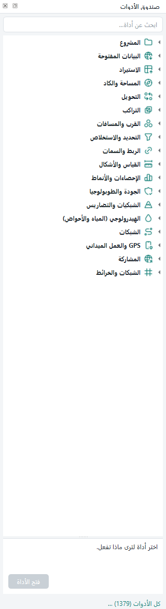
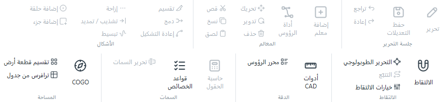
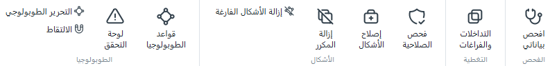
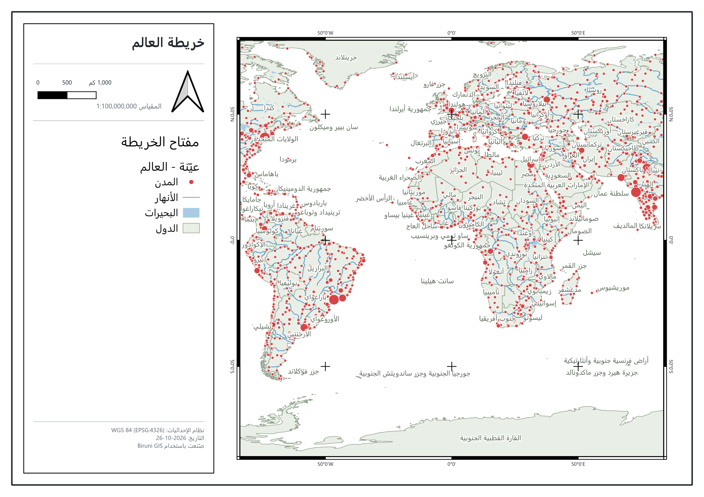
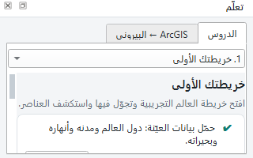

برنامج نظم معلومات جغرافية مجاني ومفتوح المصدر، بالعربي والإنجليزي.
الدليل ده مكتوب للمهندسين والمساحين، وبالذات اللي جايين من ArcGIS.
الإصدار 0.2.0مجاني بالكاملمن غير حسابWindows 10 / 11
مبني على QGIS · مفتوح المصدر (GPL)
الأسماء ArcGIS, Excel, AutoCAD, Windows, QGIS علامات تجارية لأصحابها. البرنامج مستقل، وغير تابع لهم ولا معتمد منهم.
1إيه هو Biruni GIS؟
برنامج GIS مكتبي كامل: تفتح بياناتك، ترسم وتعدّل، تحلّل، وتطلّع خريطة جاهزة للطباعة — من غير اشتراك ولا حساب.
البرنامج شغّال على محرّك QGIS العالمي المجرَّب، وفوقه واجهة شريطية (Ribbon) قريبة من اللي متعوّد عليه في ArcGIS Pro، بالعربي من اليمين للشمال أو بالإنجليزي. كل قوة المحرّك موجودة تحت إيدك: قرابة 790 أداة تحليل من QGIS و GDAL و GRASS.
مجاني فعلًا
رخصة GPL مفتوحة المصدر. مفيش نسخة تجريبية ولا ميزات مقفولة ولا حساب.
بيشتغل من غير إنترنت
الشغل الأساسي كله أوفلاين. الإنترنت بس لخرائط الأساس والبيانات المفتوحة والتحديثات.
جاي من ArcGIS؟
بيفتح مشاريع ArcGIS Pro وملفات ArcMap (mxd) و File Geodatabase، واكتب اسم أي أداة من ArcGIS في البحث يوصلك للمقابل.
معمول لشغلنا
أوتوكاد، COGO، تقسيم أراضي، Excel لنقاط، لوحة خريطة عربية، وتقرير ساعات الشغل.
محتويات الدليل
1إيه هو Biruni GIS؟
2التثبيت وأول تشغيل
3الواجهة: الشريط والبحث
4المشروع = مجلد
5فتح بياناتك ومشاريع ArcGIS
6من Excel لنقاط
7الأوتوكاد والمساحة
8البيانات المفتوحة
9صندوق الأدوات والتحليل
10التحرير وجودة البيانات
11لوحة الخريطة والمشاركة
12GPS الموبايل والعمل الميداني
13أمان الشغل وتقارير الساعات
14قاموس ArcGIS ← Biruni
15أسئلة شائعة
2التثبيت وأول تشغيل
محتاج Windows 10 أو 11 (64 بت) وحوالي 2.5 جيجا مساحة فاضية.
حمّل ملف التثبيت Biruni-GIS-0.2.0-Setup.exe من الرابط الرسمي اللي بننشره على صفحة البرنامج.
شغّل الملف وكمّل خطوات التثبيت (لغة المثبّت عربي أو إنجليزي).
افتح Biruni GIS من قائمة ابدأ أو من أيقونة سطح المكتب.
لو ظهرت رسالة «Windows protected your PC»: دي بتظهر لأي برنامج جديد لسه ما اتوقّعش رقميًا. اضغط More info وبعدين Run anyway. التوقيع الرقمي جاي في إصدار قريب، وساعتها الرسالة دي هتختفي.
البرنامج مستقل: ليه إعداداته الخاصة في مجلد %APPDATA%\Biruni GIS، ومش بيلمس أي QGIS متثبّت عندك.
صفحة البداية
أول ما البرنامج يفتح هتلاقي صفحة البداية. منها تقدر تعمل مشروع جديد أو خريطة مؤقتة تبدأ فيها على طول، وتفتح مشروع محفوظ أو أي ملف بيانات أو مشروع ArcGIS، أو تحوّل جدول Excel لنقاط، أو تتدرّب على خريطة تجريبية للعالم. وتحت الصفحة بتختار اللغة (العربية / English) والوضع اللوني (فاتح / داكن / زي الويندوز).

صفحة البداية بالعربي
3الواجهة: الشريط والبحث
كل الأوامر متقسّمة على تبويبات فوق، وكل تبويب فيه مجموعات — زي ArcGIS Pro بالظبط.
إضافة كل أنواع البيانات، Excel / CSV إلى نقاط، البيانات المفتوحة، من الكاد إلى GIS، الإسناد الجغرافي، التصدير، GPS الهاتف.
تحرير
جلسة التحرير، إضافة معلم، أداة الرؤوس، تقسيم ودمج، الالتقاط، أدوات CAD، حاسبة الحقول، قواعد الخصائص، COGO وتقسيم الأراضي.
التحليل
صندوق الأدوات، نطاق عازل، اقتطاع، إذابة، تقاطع، ربط مكاني، أقرب منشأة، حاسبة الشبكيات، مصمم النماذج.
الجودة
افحص بياناتي، التداخلات والفراغات، فحص وإصلاح الأشكال، قواعد الطوبولوجيا.
المشاركة
لوحة خريطة، التخطيطات، تصدير صورة / PDF / DXF، خريطة ويب، Google Earth، إرسال للميدان، التقارير.
عرض
اللوحات، ملء الشاشة، الوضع اللوني، اللغة، القوائم الكلاسيكية، الخيارات، المساعدة.
الإضافات
مدير الإضافات، وأي إضافة QGIS بتثبّتها بيظهر لها زرار هنا.
البحث في كل حاجة Ctrl+K
خانة البحث فوق على الشمال بتدوّر في الأدوات والطبقات والأماكن والإعدادات. اكتب اسم الأداة زي ما تعرفها من ArcGIS (مثلًا Erase أو XY Table To Point) وهيوصلك للأداة المقابلة.
اللغة والشكل
اللغة: من أيقونة اللغة فوق أو عرض ← اللغة. البرنامج بيطلب إعادة تشغيل مرة واحدة.
الوضع اللوني: فاتح أو داكن أو يمشي مع إعداد الويندوز.
متعوّد على QGIS؟ زرار القوائم الكلاسيكية بيرجّع قوائم QGIS الأصلية، وأيقونة كل القوائم (☰) بتفتح أي قائمة من غير ما تسيب الشريط.
صغّر الشريط: دبل كليك على اسم أي تبويب.
4المشروع = مجلد
المشروع الجديد في Biruni مجلد واحد فيه كل حاجة، فبتنقله أو تبعته من غير ما ملفات تضيع.
جوّه مجلد المشروع
وظيفته
<الاسم>.qgz
ملف المشروع (الخريطة والطبقات والتنسيق) — بيتفتح كمان في QGIS.
<الاسم>.gpkg
قاعدة بيانات المشروع: أي طبقة جديدة أو مؤقتة بتتحفظ هنا.
data · outputs · exports
البيانات الداخلة، ونتائج الأدوات، والملفات المصدّرة.
.history
نسخ المشروع القديمة (سجل نسخ المشروع).
Ctrl+N مشروع جديد: تختار اسم ومكان والبرنامج يعمل المجلد.
خريطة مؤقتة: ابدأ على طول من غير حفظ، ولما تحب تحفظها Ctrl+S بيحوّلها لمجلد مشروع.
نسخ كل البيانات إلى المشروع: لو ضفت ملفات من أماكن تانية على الجهاز، بينسخها جوّه المجلد.
حفظ الطبقات المؤقتة: بينقل أي طبقة مؤقتة لقاعدة بيانات المشروع قبل ما تضيع.
حزم المشروع كملف ZIP: ملف واحد تبعته لزميلك أو للعميل.
سجل نسخ المشروع — «آلة الزمن»
كل مرة تحفظ فيها بيتعمل نسخة من ملف المشروع وقاعدة بياناته. من الرئيسية ← سجل نسخ المشروع ترجّع المشروع زي ما كان من ساعة أو يوم أو أسبوع.
بيحتفظ بكل النسخ لآخر 24 ساعة، وبعدين نسخة كل يوم لمدة 30 يوم، وبعدها نسخة كل أسبوع.
قبل الاسترجاع بيحفظ الحالة الحالية كنسخة، يعني ولا حاجة بتضيع.
ملفات مجلد data مش بتتنسخ لأنها بيانات داخلة وممكن تكون كبيرة.
5فتح بياناتك ومشاريع ArcGIS
زرار إضافة بيانات بيفتح أي صيغة تقريبًا: Shapefile و GeoPackage و File Geodatabase و DXF/DWG و CSV و GeoTIFF و KML، وكمان PostGIS و WMS/WMTS و WFS وبلاطات XYZ.

تبويب «البيانات»
مشاريع ArcGIS Pro و ArcMap
من البيانات ← فتح مشروع ArcGIS أو من صفحة البداية. البرنامج بيفتح ملفات .aprx و.mapx و.lyrx بالطبقات والمجموعات والألوان والتسميات (Labels) وشروط العرض (Definition Queries)، وبيوصّلها بالبيانات اللي بتشاور عليها.
File Geodatabase: بيقراها ويكتب فيها كمان، فتقدر ترجّع شغلك لزميل شغّال على ArcGIS.
ملفات ArcMap بامتداد mxd بتتفتح بنفس الزرار: الإطارات ونظام الإحداثيات، والطبقات بترتيبها ومجموعاتها، والظاهر والمخفي، وشروط العرض، ومصادر البيانات (gdb و shp والرستر والكاد).
ألوان ورموز ملفات mxd ما بتتنقلش (صيغتها مقفولة): الطبقات بتيجي بالألوان الافتراضية. وطبقات الـ Annotation وخرائط Esri والسيرفرات بتتعدّى مع رسالة بالسبب.
6من Excel لنقاط
عندك جدول فيه إحداثيات؟ Excel / CSV إلى نقاط بيلاقي أعمدة الإحداثيات لوحده — زي XY Table To Point في ArcGIS، بس من غير ما تحدّد الأعمدة بإيدك.
من البيانات ← Excel / CSV إلى نقاط اختار الملف (xlsx أو csv).
البرنامج بيتعرّف على شكل الإحداثيات لوحده، وتقدر تراجع اختياره قبل الإضافة.
اضغط إضافة، وهتلاقي النقط على الخريطة ومعاها كل أعمدة الجدول.
شكل الإحداثيات
مثال
درجات عشرية
30.0444 , 31.2357
درجات ودقائق وثواني
30°02'40"N 31°14'09"E
UTM
شرقيات وشماليات + المنطقة
روابط الخرائط
لينك Google Maps أو لوكيشن واتساب
أرقام وعناوين عربي
٣٠٫٠٤٤٤ — وعناوين أعمدة زي «خط العرض»
محوّل الإحداثيات (الرئيسية ← الإحداثيات): اكتب إحداثي بأي شكل (درجات، DMS، UTM، MGRS، لينك خريطة) وهيظهر لك بكل الأشكال التانية. تقدر تروح له على الخريطة أو تحفظه نقطة.
7الأوتوكاد والمساحة
أدوات معمولة للمساحين: من رسمة الكاد لطبقات GIS نضيفة، وكمان رسم من الصك أو دفتر الحقل.
من الكاد إلى GIS
البيانات ← من الكاد إلى GIS بيحوّل ملف DXF لطبقات جاهزة:
النصوص بتبقى تسميات، والبلوكات بتبقى نقط ومعاها خصائصها.
الأقواس بتفضل أقواس حقيقية، والخطوط العربية من نوع SHX بتتقري صح.
النقل إلى الإحداثيات الحقيقية
لو الرسمة مرسومة على إحداثيات محلية، النقل إلى الإحداثيات الحقيقية بيحرّكها بنقطتين، أو بتحويل هلمرت، أو بتحويل Affine.
COGO — الانحرافات والمسافات
تحرير ← COGO: بتكتب نقطة البداية وبعدها الأضلاع (انحراف ومسافة، وتقدر تضيف نصف قطر للأقواس) وبتشوف الشكل على الخريطة وانت بتكتب. اللوحة بتحسب خطأ القفل والدقة، وبتوزّع الخطأ بطريقة البوصلة (Compass Rule). وتقدر تلزّق الأضلاع من Excel على طول.
تقسيم قطعة أرض والترافرس
تقسيم قطعة أرض: بيقسّم القطعة لأجزاء متساوية أو بمساحة محددة لكل جزء.
ترافرس من جدول: بيرسم الترافرس من جدول انحرافات ومسافات.
المساحة والطول والإحداثيات: بيضيف المساحة والطول و X/Y بأي وحدة، ومحسوبة على الإهليلج بقيمها الحقيقية.
8البيانات المفتوحة
بيانات مجانية لأي مكان في العالم في دقيقة: حدّد المنطقة على الخريطة واختار.
صورة حديثة بدقة 10 م ومعاها مؤشر الغطاء النباتي NDVI.
الارتفاعات (DEM 30 م)…
نموذج ارتفاعات رقمي بدقة 30 م، ومعاه تظليل للتضاريس (Hillshade).
الغطاء الأرضي (10 م)…
تصنيف الغطاء الأرضي بدقة 10 م، ومعاه مساحة كل فئة.
الحدود الإدارية…
حدود الدول والمحافظات والمراكز.
الأدوات دي في البيانات ← بيانات مفتوحة، وكمان في صندوق الأدوات. ولخلفية الخريطة (OpenStreetMap أو OpenTopoMap) استخدم زرار خريطة أساس. وللتدريب من غير إنترنت: بيانات العالم التجريبية بتضيف خريطة للعالم فيها الدول والمدن والأنهار والبحيرات.
9صندوق الأدوات والتحليل
صندوق Biruni فيه حوالي 125 أداة مختارة في 18 قسم، متقسّمة حسب الشغل اللي عايز تعمله بدل أسماء المكتبات.
افتحه من التحليل ← صندوق الأدوات.
ابحث بالعربي أو بالإنجليزي، واختار الأداة تشوف وصفها قبل ما تفتحها.
الأدوات اللي بتستخدمها كتير بتظهر في المفضّلة وآخر المستخدَم.
كل الأدوات (QGIS) بيفتح الكتالوج الكامل: حوالي 1370 أداة من QGIS و GDAL و GRASS و SAGA.
أقسام الصندوق
المشروع · البيانات المفتوحة · الاستيراد · المساحة والكاد · التحويل · التراكب · القرب والمسافات · التحديد والاستخلاص · الربط والسمات · القياس والأشكال · الإحصاءات والأنماط · الجودة والطوبولوجيا · الشبكيات والتضاريس · الهيدرولوجي (المياه والأحواض) · الشبكات · GPS والعمل الميداني · المشاركة · الشبكات والخرائط.
الهيدرولوجيا
قسم الهيدرولوجي (المياه والأحواض) في الصندوق أوله أداة المجاري والأحواض من نموذج الارتفاعات: تديها نموذج الارتفاعات (مثلاً اللي نزّلته من تنزيل الارتفاعات (DEM 30 م)) وأقل مساحة تصريف بالكيلومتر المربع، وهي تملا الحُفَر وتطلّع شبكة المجاري بترتيب Strahler وطولها، والحوض الفرعي لكل مجرى بمساحته، وكمان طبقة تراكم السريان.
وفي نفس القسم أدوات GRASS و SAGA بأسماء مفهومة: ملء الحفر (r.fill.dirو Wang & Liu)، اتجاه السريان وتراكمه، استخراج المجاري، الحوض اللي فوق نقطة مخرج، مؤشر الرطوبة TWI، ومعامل LS لانجراف التربة. والـ 590 أداة بتوع SAGA كلهم في كل الأدوات (QGIS).

صندوق الأدوات
التحليل الأشهر في سطر
عايز تعمل
استخدم
نطاق حوالين معالم
نطاق عازل (أو حلقات متعددة من الصندوق)
قص / تقاطع / اتحاد / طرح
اقتطاع · تقاطع · اتحاد · الفرق
نقل بيانات طبقة لطبقة بالموقع
ربط مكاني
أقرب مستشفى / مدرسة على الطرق
أقرب منشأة · مصفوفة المسافات (OD) · منطقة الخدمة — مع الشوارع الاتجاه الواحد والسرعات
انحدار، تظليل، كنتور
قسم الشبكيات والتضاريس وحاسبة الشبكيات
تكرار نفس الخطوات
مصمم النماذج (زي ModelBuilder)
10التحرير وجودة البيانات

تبويب «تحرير»
اختار الطبقة واضغط تحرير عشان تبدأ جلسة التحرير.
ارسم بـ إضافة معلم، وعدّل بـ أداة الرؤوس، وقسّم أو ادمج من مجموعة الأشكال.
شغّل الالتقاط والتحرير الطوبولوجي عشان الحدود المشتركة تتحرك مع بعض.
اضغط حفظ التعديلات. ولو غلطت عندك تراجع.
قواعد الخصائص (زي Domains و Attribute Rules)
تحرير ← قواعد الخصائص: لكل حقل تحدّد هو إجباري ولا لأ، ولازم يكون مش متكرر ولا لأ، ولو ليه قائمة قيم مسموحة أو مدى أرقام. وكمان قيم بتتملي لوحدها: المساحة، الطول، X/Y، تاريخ النهارده، اسم المستخدم، الرقم التالي. القواعد بتتحفظ مع المشروع وبتشتغل كمان في QField.
تبويب الجودة

افحص بياناتي: فحص واحد لكل طبقات المشروع. بيطلّع الطبقات المكسورة، ونظام الإحداثيات الناقص أو المختلف، والأشكال الغلط أو الفاضية أو المكررة، والشرايح الرفيعة، والتداخلات، والحقول الفاضية. الإصلاحات الآمنة بتتعمل في جلسة تحرير، فتراجعها قبل ما تحفظ.
التداخلات والفراغات: بيطلّع أماكن تداخل القطع والفراغات اللي بينها كطبقة تقدر تراجعها.
قواعد الطوبولوجيا: قواعد زي «ما يتداخلش» و«ما يكونش فيه فراغات» و«لازم يكون جوّه»، وكل خطأ ليه مكانه على الخريطة.
فحص الصلاحية وإصلاح الأشكال وإزالة المكرر.
11لوحة الخريطة والمشاركة
المشاركة ← لوحة خريطة: لوحة جاهزة للطباعة بضغطة واحدة — إطار بإحداثيات، وسهم شمال، ومقياس رسم، ومفتاح للخريطة، وبيانات اللوحة. ولو محدّد قطعة أرض، بيضيف جدول إحداثيات الأركان.

لوحة خريطة عربية متعملة بضغطة واحدة
اللوحة العربية بتطلع من اليمين للشمال وبالأرقام العربية، والإنجليزية من الشمال لليمين.
لو محتاج تحكّم كامل: تخطيط جديد بيفتح محرّر التخطيطات بتاع QGIS.
التصدير: صورة · PDF · DXF للأوتوكاد.
انشر شغلك
خريطة ويب
ملف HTML واحد بيتفتح في أي متصفح، حتى على الموبايل، ومن غير سيرفر. ابعته على واتساب أو بالإيميل.
Google Earth (KMZ)
طبقاتك بألوانها في ملف KMZ واحد للعميل.
إرسال للميدان (QField)
نسخة من المشروع لتطبيق QField المجاني على أندرويد وآيفون، تشتغل من غير نت ومعاها خريطة أساس أوفلاين.
استرجاع من الميدان
بيقارن الشغل اللي رجع: الإضافات والتعديلات والحذف ولو فيه تعارض، وتراجعه قبل ما تحفظه.
12GPS الموبايل والعمل الميداني
البيانات ← GPS الهاتف: موبايلك جنب اللابتوب يبقى جهاز GPS، والمكان والمسار بيظهروا على الخريطة على طول.
الموبايل واللابتوب على نفس شبكة الواي فاي.
على أندرويد: تطبيق GPSd Forwarder. على آيفون: GPS2IP. ابعت منه بيانات NMEA للعنوان والبورت اللي ظاهرين في اللوحة.
اضغط اتصال، وبعدها تسجيل.
التسجيل بيتحفظ في المشروع كنقط، وخط مسار عليه المسافة والسرعة، وأماكن الوقوف. وينفع كمان التوصيل بالبلوتوث أو USB أو بجهاز GNSS خارجي.
تجريبي — من غير تطبيق: اختار «متصفح الهاتف» وامسح كود QR بكاميرا الموبايل، والمتصفح يبعت المكان على طول.
البرنامج بيسجّل شغلك على المشروع لوحده: الوقت والتعديلات والأدوات.
تقرير النشاط: ملف Excel فيه جلسات الشغل، والوقت الفعلي، والمعالم اللي اتضافت أو اتعدّلت أو اتحذفت لكل طبقة ولكل يوم، والأدوات اللي اشتغلت، ومعاه رسوم بيانية.
كشف الساعات: ساعات الشغل الفعلية لكل يوم، واللي اتعمل فيه، والمبلغ بسعر الساعة بتاعك، في شيت Excel جاهز للعميل.
سجل نسخ المشروع: ارجع لأي نسخة قديمة (شوف الجزء 4). سجل النشاط نفسه عمره ما بيرجع لورا.
اتعلّم جوّه البرنامج
الرئيسية ← تعلّم بيفتح لوحة فيها 7 دروس قصيرة، كل درس خطوات بزراير بتعملها معاك:
خريطتك الأولى
اسأل البيانات سؤال
نسّق خريطة
نقاط من Excel
خريطة جاهزة للطباعة
حافظ على شغلك
بيانات من الإنترنت
وفي تبويب ArcGIS ← البيروني قاموس فيه حوالي 90 أداة من ArcGIS والمقابل بتاعها هنا.

لوحة «تعلّم»
14قاموس ArcGIS ← Biruni
الأسماء اللي تعرفها، والمقابل بتاعها في الواجهة العربية.
في ArcGIS Pro
في Biruni GIS
Contents pane
لوحة الطبقات
Catalog pane
لوحة المستعرض
Geoprocessing pane
صندوق الأدوات
Symbology pane
لوحة التنسيق
Attribute Table
جدول السمات
Feature Class
طبقة متجهية (في قاعدة بيانات المشروع GeoPackage)
File Geodatabase
GeoPackage للمشروع — و File Geodatabase بيتقري ويتكتب برضه
Select By Attributes / Location
تحديد حسب السمات / حسب الموقع
Calculate Field
حاسبة الحقول
Calculate Geometry Attributes
المساحة والطول والإحداثيات
XY Table To Point
Excel / CSV إلى نقاط
Buffer · Clip · Intersect · Union
نطاق عازل · اقتطاع · تقاطع · اتحاد
Erase · Dissolve · Merge
الفرق · إذابة · دمج الطبقات
Spatial Join · Project
ربط مكاني · إعادة الإسقاط
Domains / Attribute Rules
قواعد الخصائص
Topology
قواعد الطوبولوجيا
Georeference
الإسناد الجغرافي
Layout
لوحة خريطة (سريعة) أو تخطيط جديد
ModelBuilder
مصمم النماذج
Raster Calculator
حاسبة الشبكيات
Closest Facility · OD Cost Matrix · Service Area
أقرب منشأة · مصفوفة المسافات (OD) · منطقة الخدمة
Editor Tracking
تقرير النشاط (وأكتر منه)
Package Project
حزم المشروع كملف ZIP
Field Maps
إرسال للميدان (QField)
Python window
طرفية بايثون
مش لاقي أداة؟ اكتب اسمها بالإنجليزي زي ما هو في ArcGIS في خانة البحث Ctrl+K.
15أسئلة شائعة
البرنامج مجاني فعلًا؟ فيه اشتراك بعدين؟
مجاني بالكامل ومفتوح المصدر برخصة GPL. مفيش اشتراك ولا حساب ولا ميزات مقفولة.
مش جاية مع البرنامج، لأن رخصتها بتمنع توزيعها مع برامج الديسك توب. حوّلها لـ GeoTIFF، أو ضيف الدعم بنفسك لو معاك رخصة.
محتاج إنترنت؟
لأ للشغل العادي. الإنترنت مطلوب بس لخرائط الأساس والبيانات المفتوحة والتحقق من التحديثات.
عندي QGIS متثبّت، هيحصل تعارض؟
لأ. Biruni ليه إعداداته في مجلد لوحده، ومشاريعه (.qgz) بتتفتح في QGIS عادي.
بيدعم إضافات QGIS؟
أيوه، من عرض ← الإضافات، وأدوات الإضافة بتظهر في تبويب الإضافات.
لقيت مشكلة، أعمل إيه؟
عرض ← الإبلاغ عن مشكلة: اكتب اللي حصل، والبرنامج يعمل ملف ZIP على سطح المكتب فيه بيانات النسخة والجهاز وآخر الرسائل (من غير بياناتك نفسها). ابعته لنا مع وصف المشكلة.
إزاي أعرف إن فيه تحديث؟
عرض ← البحث عن تحديثات. والبرنامج بيبلّغك برسالة لما ينزل إصدار جديد، والتثبيت دايمًا بإيدك.
Biruni GIS 0.2.0 · مبني على QGIS · مفتوح المصدر (GNU GPL v2 أو أحدث).
سُمّي البرنامج على اسم العالم أبو الريحان البيروني (973–1048)، اللي قاس نصف قطر الأرض من فوق جبل بزاوية انخفاض الأفق، ودي فكرة الشعار.
الأسماء ArcGIS, Excel, AutoCAD, Windows, QGIS علامات تجارية لأصحابها. البرنامج مستقل، وغير تابع لهم ولا معتمد منهم.